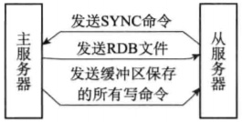
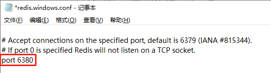
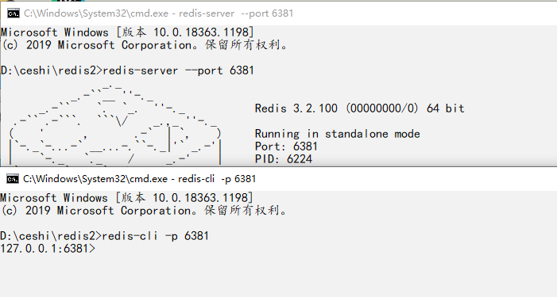
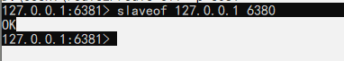
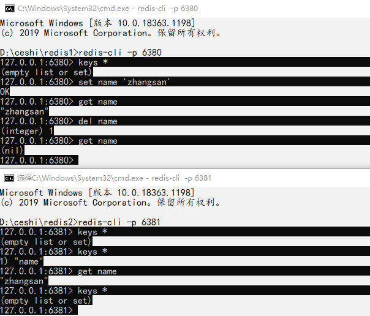

# 概述
# 原理
- Slave 服务启动，主动连接 Master，并发送
SYNC命令，请求初始化同步 - Master 收到 SYNC 后，执行
BGSAVE命令生成 RDB 文件，并使用缓冲区记录此后执行的所有写命令 - Master 完成 RDB 文件后，将其发送给所有 Slave 服务器
- Slave 服务器接收到 RDB 文件后，删除内存中旧的缓存数据，并装载 RDB 文件
- Master 在发送完 RDB 后，即刻向所有 Slave 服务器发送缓存中的写命令
- 至此初次连接同步完成，后续进行
增量同步

# 准备工作，Win10 安装多个 redis
- 下载 Redis 免安装版
- 点击这里进行下载
- 提取码：byjt
- 将压缩包分别解压到两个文件夹，在
redis.windows.conf中修改端口号为：6380与6381

# 配置主从
- 测试环境
- 主服务器：127.0.0.1:6380
- 从服务器：127.0.0.1:6381
- Redis 版本： 3.2
- 系统：Win10
- Redis Slaveof 命令
- 通过下面的命令，可以将当前服务器转变为指定服务器的从服务器
- 如果当前服务器已经是某个主服务器的从服务器，那么会让当前服务器停止对旧主服务器的同步，丢弃旧数据集，转而开始对新主服务器进行同步
slaveof host port |
-
另外，对一个从服务器执行下面的命令，会使这个从服务器关闭复制功能，并将从服务器转变回主服务器，原来同步所得的数据集不会被丢弃
-
利用
不会丢弃同步所得数据集这个特性，可以在主服务器失败的时候，将从服务器用作新的主服务器，从而实现无间断运行
slaveof no one |
- 启动
Slave
redis-server --port 6381 # 启动服务器 | |
redis-cli -p 6381 # 启动客户端 |

- 开启数据同步
- 在
Slave的客户端输入下面命令
slaveof 127.0.0.1 6380 # 设置主从，6380是Master，6381是Slave |

# 测试
- 由图可见，已经完成主从同步🤞
